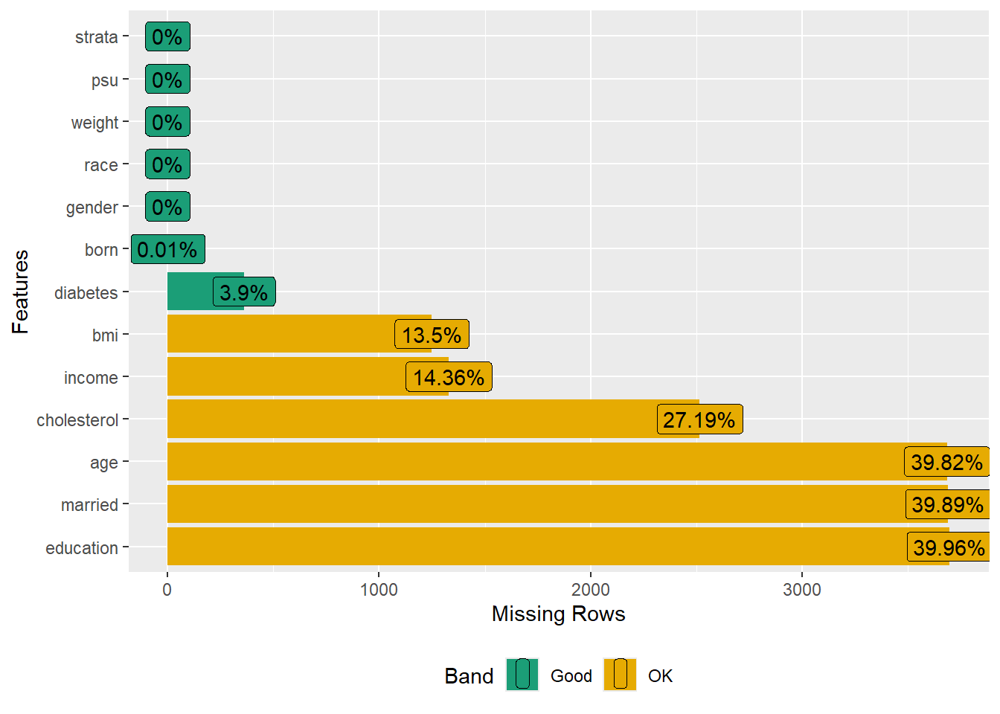
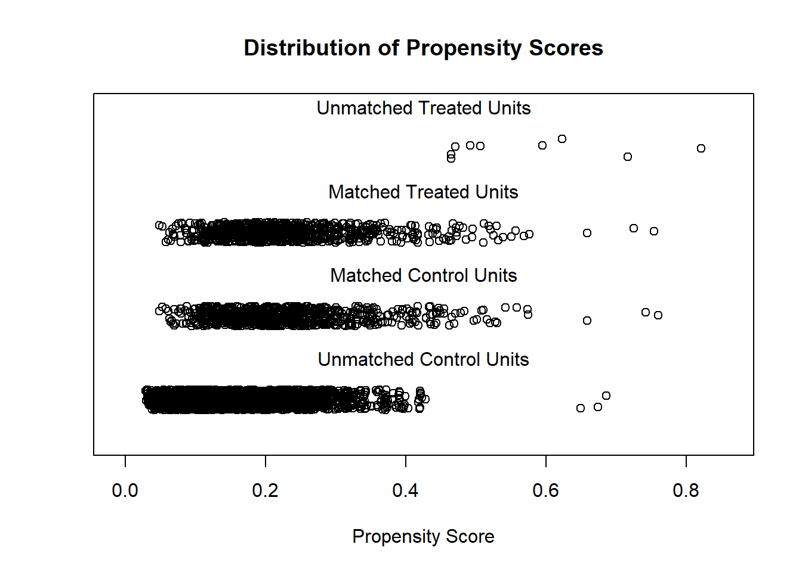
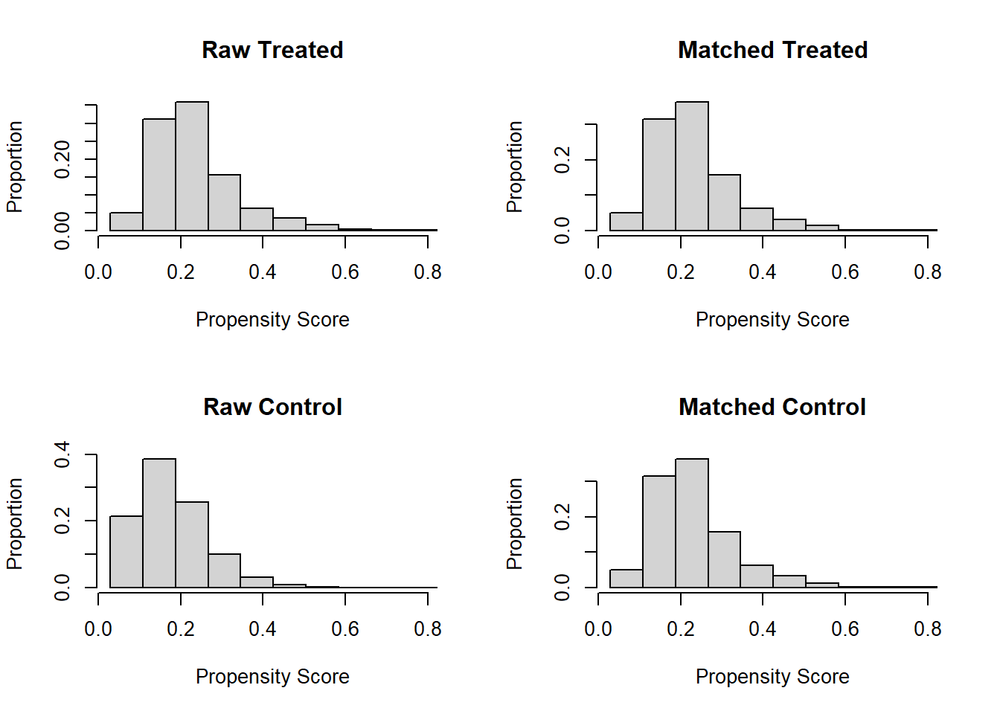
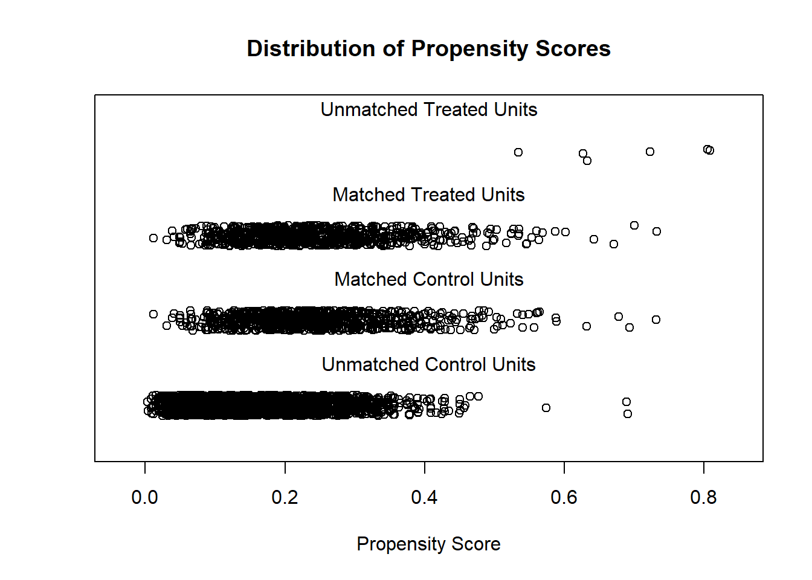
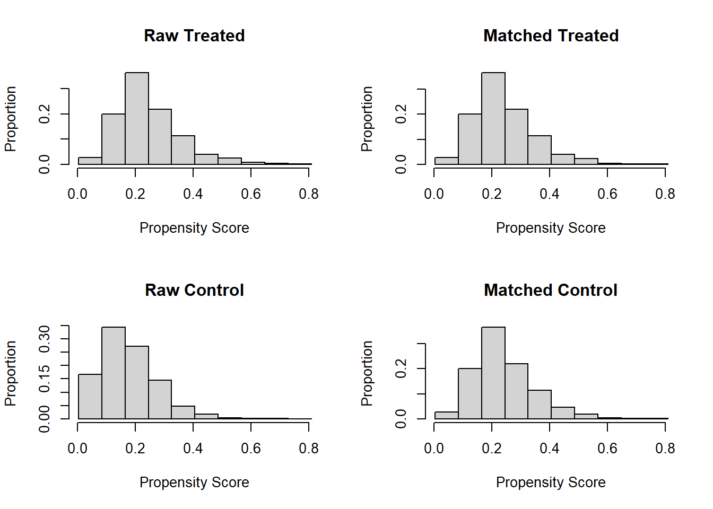
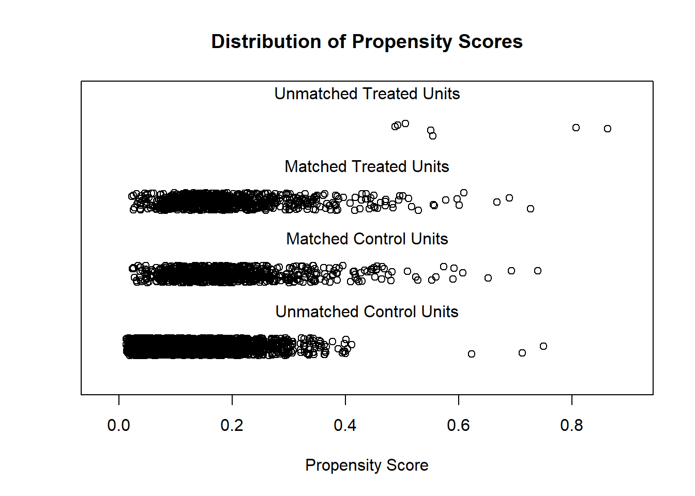
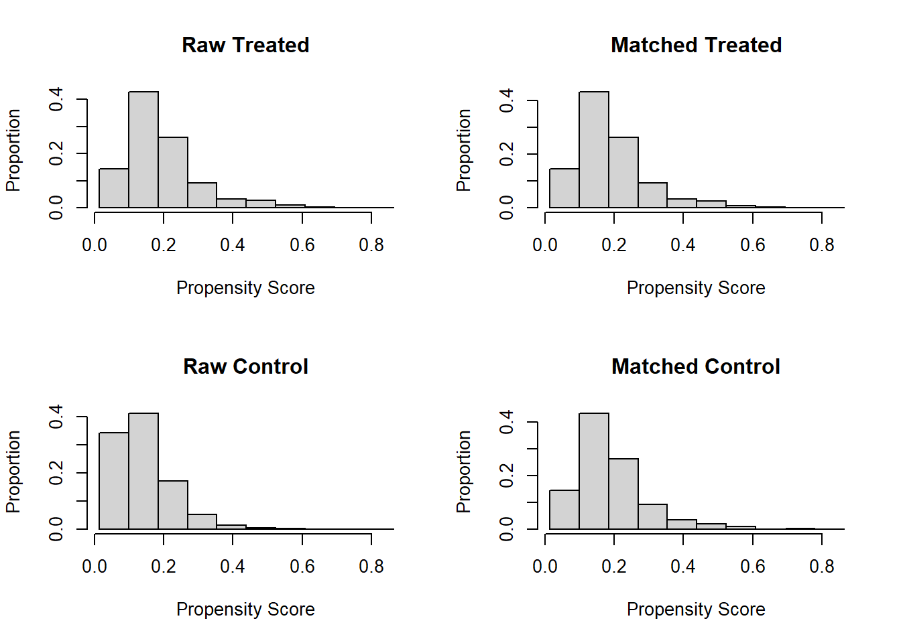

PSM in OA-CVD (US)
Pre-processing
Load data
Load the dataset and inspect its structure and variables.
Visualize missing data patterns.
library(dplyr)
#>
#> Attaching package: 'dplyr'
#> The following objects are masked from 'package:data.table':
#>
#> between, first, last
#> The following objects are masked from 'package:stats':
#>
#> filter, lag
#> The following objects are masked from 'package:base':
#>
#> intersect, setdiff, setequal, union
analytic.with.miss <- dplyr::select(analytic.with.miss,
cholesterol, #outcome
gender, age, born, race, education,
married, income, bmi, diabetes, #predictors
weight, psu, strata) #survey features
dim(analytic.with.miss)
#> [1] 9254 13
str(analytic.with.miss)
#> 'data.frame': 9254 obs. of 13 variables:
#> $ cholesterol: 'labelled' int NA NA 157 148 189 209 176 NA 238 182 ...
#> ..- attr(*, "label")= chr "Total Cholesterol (mg/dL)"
#> $ gender : chr "Female" "Male" "Female" "Male" ...
#> $ age : 'labelled' int NA NA 66 NA NA 66 75 NA 56 NA ...
#> ..- attr(*, "label")= chr "Age in years at screening"
#> $ born : chr "Born in 50 US states or Washingt" "Born in 50 US states or Washingt" "Born in 50 US states or Washingt" "Born in 50 US states or Washingt" ...
#> $ race : chr "Other" "White" "Black" "Other" ...
#> $ education : chr NA NA "High.School" NA ...
#> $ married : chr NA NA "Previously.married" NA ...
#> $ income : chr "Over100k" "Over100k" "<25k" NA ...
#> $ bmi : 'labelled' num 17.5 15.7 31.7 21.5 18.1 23.7 38.9 NA 21.3 19.7 ...
#> ..- attr(*, "label")= chr "Body Mass Index (kg/m**2)"
#> $ diabetes : chr "No" "No" "No" "No" ...
#> $ weight : 'labelled' num 8540 42567 8338 8723 7065 ...
#> ..- attr(*, "label")= chr "Full sample 2 year MEC exam weight"
#> $ psu : Factor w/ 2 levels "1","2": 2 1 2 2 1 2 1 1 2 2 ...
#> $ strata : Factor w/ 15 levels "134","135","136",..: 12 10 12 1 5 5 3 1 1 14 ...
names(analytic.with.miss)
#> [1] "cholesterol" "gender" "age" "born" "race"
#> [6] "education" "married" "income" "bmi" "diabetes"
#> [11] "weight" "psu" "strata"
library(DataExplorer)
plot_missing(analytic.with.miss)
Formatting variables
Rename variables to avoid conflicts. Recode variables into binary or categorical as needed. Ensure variable types (factor, numeric) are appropriate.
# to avaoid any confusion later
# rename weight variable as weights
# is reserved for matching weights
analytic.with.miss$survey.weight <- analytic.with.miss$weight
analytic.with.miss$weight <- NULL
#Creating binary variable for cholesterol
analytic.with.miss$cholesterol.bin <- ifelse(analytic.with.miss$cholesterol <200,
1, #"healthy",
0) #"unhealthy")
# exposure recoding
analytic.with.miss$diabetes <- ifelse(analytic.with.miss$diabetes == "Yes", 1, 0)
# ID
analytic.with.miss$ID <- 1:nrow(analytic.with.miss)
# covariates
analytic.with.miss$born <- ifelse(analytic.with.miss$born == "Other",
0,
1)
vars = c("gender", "race", "education",
"married", "income", "bmi")
numeric.names <- c("cholesterol", "bmi")
factor.names <- vars[!vars %in% numeric.names]
analytic.with.miss[factor.names] <- apply(X = analytic.with.miss[factor.names],
MARGIN = 2, FUN = as.factor)
analytic.with.miss[numeric.names] <- apply(X = analytic.with.miss[numeric.names],
MARGIN = 2, FUN =function (x)
as.numeric(as.character(x)))
analytic.with.miss$income <- factor(analytic.with.miss$income,
ordered = TRUE,
levels = c("<25k", "Between.25kto54k",
"Between.55kto99k",
"Over100k"))
# features
table(analytic.with.miss$strata)
#>
#> 134 135 136 137 138 139 140 141 142 143 144 145 146 147 148
#> 510 638 695 554 605 653 612 693 735 551 689 609 604 596 510
table(analytic.with.miss$psu)
#>
#> 1 2
#> 4464 4790
table(analytic.with.miss$strata,analytic.with.miss$psu)
#>
#> 1 2
#> 134 215 295
#> 135 316 322
#> 136 320 375
#> 137 306 248
#> 138 308 297
#> 139 278 375
#> 140 315 297
#> 141 282 411
#> 142 349 386
#> 143 232 319
#> 144 351 338
#> 145 339 270
#> 146 277 327
#> 147 335 261
#> 148 241 269
# impute
# require(mice)
# imputation1 <- mice(analytic.with.miss, seed = 123,
# m = 1, # Number of multiple imputations.
# maxit = 10 # Number of iteration; mostly useful for convergence
# )
# analytic.with.miss <- complete(imputation1)
# plot_missing(analytic.with.miss)Complete case data
Create a dataset (analytic.data) without NA values for analysis. This is done for simplified analysis, but this approach has it’s own challenges. In a next tutorial, we will appropriately deal with missing observations in a propensity score modelling.
Zanutto (2006)
- Ref: (Zanutto 2006)
Video content (optional)
For those who prefer a video walkthrough, feel free to watch the video below, which offers a description of an earlier version of the above content.
Set seed
- “it is not necessary to use survey-weighted estimation for the propensity score model”
Propensity score analysis in 4 steps:
Step 1
Specify the propensity score model to estimate propensity scores
Step 2
Match treated and untreated subjects on the estimated propensity scores. Perform nearest-neighbor matching using the propensity scores. Visualize the distribution of propensity scores before and after matching.
require(MatchIt)
set.seed(123)
# This function fits propensity score model (using logistic
# regression as above) when specified distance = 'logit'
# performs nearest-neighbor (NN) matching,
# without replacement
# with caliper = .2*SD of propensity score
# within which to draw control units
# with 1:1 ratio (pair-matching)
match.obj <- matchit(ps.formula, data = analytic.data,
distance = 'logit',
method = "nearest",
replace=FALSE,
caliper = .2,
ratio = 1)
# see matchit function options here
# https://www.rdocumentation.org/packages/MatchIt/versions/1.0-1/topics/matchit
analytic.data$PS <- match.obj$distance
summary(match.obj$distance)
#> Min. 1st Qu. Median Mean 3rd Qu. Max.
#> 0.02901 0.12255 0.17658 0.18982 0.23876 0.82164
plot(match.obj, type = "jitter")
#> To identify the units, use first mouse button; to stop, use second.
plot(match.obj, type = "hist")
tapply(analytic.data$PS, analytic.data$diabetes, summary)
#> $`0`
#> Min. 1st Qu. Median Mean 3rd Qu. Max.
#> 0.02901 0.11509 0.16687 0.17949 0.22816 0.75968
#>
#> $`1`
#> Min. 1st Qu. Median Mean 3rd Qu. Max.
#> 0.04793 0.16489 0.21300 0.23395 0.27768 0.82164
# check how many matched
match.obj
#> A matchit object
#> - method: 1:1 nearest neighbor matching without replacement
#> - distance: Propensity score [caliper]
#> - estimated with logistic regression
#> - caliper: <distance> (0.019)
#> - number of obs.: 4167 (original), 1564 (matched)
#> - target estimand: ATT
#> - covariates: gender, born, race, education, married, income, bmi
# extract matched data
matched.data <- match.data(match.obj)Step 3
compare the similarity of baseline characteristics between treated and untreated subjects in a the propensity score-matched sample. In this case, we will compare SMD < 0.2 or not.
require(tableone)
baselinevars <- c("gender", "born", "race", "education",
"married", "income", "bmi")
tab1 <- CreateTableOne(strata = "diabetes", vars = baselinevars,
data = analytic.data, test = FALSE)
print(tab1, smd = TRUE)
#> Stratified by diabetes
#> 0 1 SMD
#> n 3376 791
#> gender = Male (%) 1578 (46.7) 434 (54.9) 0.163
#> born (mean (SD)) 1.00 (0.00) 1.00 (0.00) <0.001
#> race (%) 0.060
#> Black 728 (21.6) 183 (23.1)
#> Hispanic 727 (21.5) 170 (21.5)
#> Other 642 (19.0) 159 (20.1)
#> White 1279 (37.9) 279 (35.3)
#> education (%) 0.185
#> College 1992 (59.0) 415 (52.5)
#> High.School 1174 (34.8) 290 (36.7)
#> School 210 ( 6.2) 86 (10.9)
#> married (%) 0.316
#> Married 2027 (60.0) 488 (61.7)
#> Never.married 631 (18.7) 70 ( 8.8)
#> Previously.married 718 (21.3) 233 (29.5)
#> income (%) 0.092
#> <25k 830 (24.6) 225 (28.4)
#> Between.25kto54k 1064 (31.5) 244 (30.8)
#> Between.55kto99k 778 (23.0) 173 (21.9)
#> Over100k 704 (20.9) 149 (18.8)
#> bmi (mean (SD)) 29.29 (7.11) 32.31 (8.03) 0.399tab1m <- CreateTableOne(strata = "diabetes", vars = baselinevars,
data = matched.data, test = FALSE)
print(tab1m, smd = TRUE)
#> Stratified by diabetes
#> 0 1 SMD
#> n 782 782
#> gender = Male (%) 422 (54.0) 430 (55.0) 0.021
#> born (mean (SD)) 1.00 (0.00) 1.00 (0.00) <0.001
#> race (%) 0.068
#> Black 180 (23.0) 179 (22.9)
#> Hispanic 151 (19.3) 170 (21.7)
#> Other 171 (21.9) 156 (19.9)
#> White 280 (35.8) 277 (35.4)
#> education (%) 0.077
#> College 441 (56.4) 411 (52.6)
#> High.School 262 (33.5) 286 (36.6)
#> School 79 (10.1) 85 (10.9)
#> married (%) 0.044
#> Married 502 (64.2) 486 (62.1)
#> Never.married 63 ( 8.1) 69 ( 8.8)
#> Previously.married 217 (27.7) 227 (29.0)
#> income (%) 0.065
#> <25k 202 (25.8) 218 (27.9)
#> Between.25kto54k 236 (30.2) 244 (31.2)
#> Between.55kto99k 187 (23.9) 171 (21.9)
#> Over100k 157 (20.1) 149 (19.1)
#> bmi (mean (SD)) 32.12 (8.29) 32.05 (7.58) 0.009Step 4
Estimate the effect of treatment on outcomes using propensity score-matched sample. Use the matched sample to estimate the treatment effect, considering survey design.
Incorporating the survey design into both linear regression and propensity score analysis is crucial. Neglecting the survey weights can significantly impact the estimates, altering the representation of population-level effects.
require(survey)
# setup the design with survey features
analytic.with.miss$matched <- 0
length(analytic.with.miss$ID) # full data
#> [1] 9254
length(matched.data$ID) # matched data
#> [1] 1564
length(analytic.with.miss$ID[analytic.with.miss$ID %in% matched.data$ID])
#> [1] 1564
analytic.with.miss$matched[analytic.with.miss$ID %in% matched.data$ID] <- 1
table(analytic.with.miss$matched)
#>
#> 0 1
#> 7690 1564
w.design0 <- svydesign(strata=~strata, id=~psu, weights=~survey.weight,
data=analytic.with.miss, nest=TRUE)
w.design.m <- subset(w.design0, matched == 1)out.formula <- as.formula(cholesterol.bin ~ diabetes)
sfit <- svyglm(out.formula,family=binomial(logit), design = w.design.m)
#> Warning in eval(family$initialize): non-integer #successes in a binomial glm!
require(jtools)
summ(sfit, exp = TRUE, confint = TRUE)| Observations | 1564 |
| Dependent variable | cholesterol.bin |
| Type | Survey-weighted generalized linear model |
| Family | binomial |
| Link | logit |
| Pseudo-R² (Cragg-Uhler) | 0.02 |
| Pseudo-R² (McFadden) | 0.01 |
| AIC | 1925.24 |
| exp(Est.) | 2.5% | 97.5% | t val. | p | |
|---|---|---|---|---|---|
| (Intercept) | 1.33 | 0.97 | 1.80 | 1.79 | 0.09 |
| diabetes | 1.68 | 1.17 | 2.41 | 2.84 | 0.01 |
| Standard errors: Robust |
DuGoff et al. (2014)
Propensity score analysis in 4 steps (PATT)
Video content (optional)
For those who prefer a video walkthrough, feel free to watch the video below, which offers a description of an earlier version of the above content.
Step 1
Specify the propensity score model to estimate propensity scores. Similar to Zanutto but includes additional covariates in the model.
Step 2
Match treated and untreated subjects on the estimated propensity scores
require(MatchIt)
set.seed(123)
match.obj <- matchit(ps.formula, data = analytic.data,
distance = 'logit',
method = "nearest",
replace=FALSE,
caliper = .2,
ratio = 1)
analytic.data$PS <- match.obj$distance
summary(match.obj$distance)
#> Min. 1st Qu. Median Mean 3rd Qu. Max.
#> 0.00363 0.11341 0.17509 0.18982 0.24765 0.80853
plot(match.obj, type = "jitter")
#> To identify the units, use first mouse button; to stop, use second.
plot(match.obj, type = "hist")
tapply(analytic.data$PS, analytic.data$diabetes, summary)
#> $`0`
#> Min. 1st Qu. Median Mean 3rd Qu. Max.
#> 0.00363 0.10394 0.16243 0.17690 0.23461 0.73143
#>
#> $`1`
#> Min. 1st Qu. Median Mean 3rd Qu. Max.
#> 0.01182 0.17245 0.22748 0.24500 0.29948 0.80853
# check how many matched
match.obj
#> A matchit object
#> - method: 1:1 nearest neighbor matching without replacement
#> - distance: Propensity score [caliper]
#> - estimated with logistic regression
#> - caliper: <distance> (0.021)
#> - number of obs.: 4167 (original), 1570 (matched)
#> - target estimand: ATT
#> - covariates: gender, born, race, education, married, income, bmi, psu, strata, survey.weight
# extract matched data
matched.data <- match.data(match.obj)Step 3
Compare the similarity of baseline characteristics between treated and untreated subjects in a the propensity score-matched sample. In this case, we will compare SMD < 0.2 or not.
require(tableone)
baselinevars <- c("gender", "born", "race", "education",
"married", "income", "bmi",
"psu", "strata", "survey.weight")
matched.data$survey.weight <- as.numeric(as.character(matched.data$survey.weight))
matched.data$strata <- as.numeric(as.character(matched.data$strata))
tab1m <- CreateTableOne(strata = "diabetes", vars = baselinevars,
data = matched.data, test = FALSE)
print(tab1m, smd = TRUE)
#> Stratified by diabetes
#> 0 1 SMD
#> n 785 785
#> gender = Male (%) 433 (55.2) 431 (54.9) 0.005
#> born (mean (SD)) 1.00 (0.00) 1.00 (0.00) <0.001
#> race (%) 0.048
#> Black 193 (24.6) 180 (22.9)
#> Hispanic 163 (20.8) 170 (21.7)
#> Other 163 (20.8) 158 (20.1)
#> White 266 (33.9) 277 (35.3)
#> education (%) 0.032
#> College 403 (51.3) 412 (52.5)
#> High.School 300 (38.2) 288 (36.7)
#> School 82 (10.4) 85 (10.8)
#> married (%) 0.030
#> Married 473 (60.3) 484 (61.7)
#> Never.married 71 ( 9.0) 70 ( 8.9)
#> Previously.married 241 (30.7) 231 (29.4)
#> income (%) 0.035
#> <25k 232 (29.6) 222 (28.3)
#> Between.25kto54k 236 (30.1) 242 (30.8)
#> Between.55kto99k 176 (22.4) 173 (22.0)
#> Over100k 141 (18.0) 148 (18.9)
#> bmi (mean (SD)) 31.92 (8.33) 32.09 (7.52) 0.020
#> psu = 2 (%) 382 (48.7) 394 (50.2) 0.031
#> strata (mean (SD)) 140.84 (4.24) 140.97 (4.23) 0.031
#> survey.weight (mean (SD)) 35647.01 (37699.98) 35596.81 (45212.82) 0.001Step 4
Estimate the effect of treatment on outcomes using propensity score-matched sample
# setup the design with survey features
analytic.with.miss$matched <- 0
length(analytic.with.miss$ID) # full data
#> [1] 9254
length(matched.data$ID) # matched data
#> [1] 1570
length(analytic.with.miss$ID[analytic.with.miss$ID %in% matched.data$ID])
#> [1] 1570
analytic.with.miss$matched[analytic.with.miss$ID %in% matched.data$ID] <- 1
table(analytic.with.miss$matched)
#>
#> 0 1
#> 7684 1570
w.design0 <- svydesign(strata=~strata, id=~psu, weights=~survey.weight,
data=analytic.with.miss, nest=TRUE)
w.design.m <- subset(w.design0, matched == 1)out.formula <- as.formula(cholesterol.bin ~ diabetes)
sfit <- svyglm(out.formula,family=binomial, design = w.design.m)
#> Warning in eval(family$initialize): non-integer #successes in a binomial glm!
require(jtools)
summ(sfit, exp = TRUE, confint = TRUE)| Observations | 1570 |
| Dependent variable | cholesterol.bin |
| Type | Survey-weighted generalized linear model |
| Family | binomial |
| Link | logit |
| Pseudo-R² (Cragg-Uhler) | 0.01 |
| Pseudo-R² (McFadden) | 0.00 |
| AIC | 1918.09 |
| exp(Est.) | 2.5% | 97.5% | t val. | p | |
|---|---|---|---|---|---|
| (Intercept) | 1.69 | 1.33 | 2.15 | 4.24 | 0.00 |
| diabetes | 1.32 | 0.99 | 1.77 | 1.86 | 0.08 |
| Standard errors: Robust |
Austin et al. (2018)
Propensity score analysis in 4 steps (PATT)
Video content (optional)
For those who prefer a video walkthrough, feel free to watch the video below, which offers a description of an earlier version of the above content.
Step 1
Specify the propensity score model to estimate propensity scores. Use survey logistic regression to account for survey design in propensity score estimation.
# response = exposure variable
# independent variables = baseline covariates
ps.formula <- as.formula(diabetes ~ gender + born + race + education +
married + income + bmi)
require(survey)
analytic.design <- svydesign(id=~psu,weights=~survey.weight,
strata=~strata,
data=analytic.data, nest=TRUE)
ps.fit <- svyglm(ps.formula, design=analytic.design, family=quasibinomial)
analytic.data$PS <- fitted(ps.fit)
summary(analytic.data$PS)
#> Min. 1st Qu. Median Mean 3rd Qu. Max.
#> 0.01352 0.08788 0.13399 0.15120 0.19285 0.86375Step 2
Match treated and untreated subjects on the estimated propensity scores. Two methods are explored: using the Matching package and the MatchIt package.
require(Matching)
#> Loading required package: Matching
#> Warning: package 'Matching' was built under R version 4.3.1
#> Loading required package: MASS
#>
#> Attaching package: 'MASS'
#> The following object is masked from 'package:dplyr':
#>
#> select
#> ##
#> ## Matching (Version 4.10-14, Build Date: 2023-09-13)
#> ## See https://www.jsekhon.com for additional documentation.
#> ## Please cite software as:
#> ## Jasjeet S. Sekhon. 2011. ``Multivariate and Propensity Score Matching
#> ## Software with Automated Balance Optimization: The Matching package for R.''
#> ## Journal of Statistical Software, 42(7): 1-52.
#> ##
match.obj2 <- Match(Y=analytic.data$cholesterol,
Tr=analytic.data$diabetes,
X=analytic.data$PS,
M=1,
estimand = "ATT",
replace=FALSE,
caliper = 0.2)
summary(match.obj2)
#>
#> Estimate... -15.287
#> SE......... 2.118
#> T-stat..... -7.2175
#> p.val...... 5.2958e-13
#>
#> Original number of observations.............. 4167
#> Original number of treated obs............... 791
#> Matched number of observations............... 781
#> Matched number of observations (unweighted). 781
#>
#> Caliper (SDs)........................................ 0.2
#> Number of obs dropped by 'exact' or 'caliper' 10
matched.data2 <- analytic.data[c(match.obj2$index.treated,
match.obj2$index.control),]
dim(matched.data2)
#> [1] 1562 16require(MatchIt)
set.seed(123)
match.obj <- matchit(ps.formula, data = analytic.data,
distance = analytic.data$PS,
method = "nearest",
replace=FALSE,
caliper = .2,
ratio = 1)
analytic.data$PS <- match.obj$distance
summary(match.obj$distance)
#> Min. 1st Qu. Median Mean 3rd Qu. Max.
#> 0.01352 0.08788 0.13399 0.15120 0.19285 0.86375
plot(match.obj, type = "jitter")
#> To identify the units, use first mouse button; to stop, use second.
plot(match.obj, type = "hist")
tapply(analytic.data$PS, analytic.data$diabetes, summary)
#> $`0`
#> Min. 1st Qu. Median Mean 3rd Qu. Max.
#> 0.01352 0.08182 0.12644 0.14119 0.18267 0.75047
#>
#> $`1`
#> Min. 1st Qu. Median Mean 3rd Qu. Max.
#> 0.02352 0.12362 0.16998 0.19389 0.23171 0.86375
# check how many matched
match.obj
#> A matchit object
#> - method: 1:1 nearest neighbor matching without replacement
#> - distance: User-defined [caliper]
#> - caliper: <distance> (0.019)
#> - number of obs.: 4167 (original), 1568 (matched)
#> - target estimand: ATT
#> - covariates: gender, born, race, education, married, income, bmi
# extract matched data
matched.data2 <- match.data(match.obj)
dim(matched.data2)
#> [1] 1568 19Step 3
Compare the similarity of baseline characteristics between treated and untreated subjects in a the propensity score-matched sample. In this case, we will compare SMD < 0.2 or not.
baselinevars <- c("gender", "born", "race", "education",
"married", "income", "bmi")
tab1m <- CreateTableOne(strata = "diabetes",
vars = baselinevars,
data = matched.data2, test = FALSE)
print(tab1m, smd = TRUE)
#> Stratified by diabetes
#> 0 1 SMD
#> n 784 784
#> gender = Male (%) 405 (51.7) 431 (55.0) 0.067
#> born (mean (SD)) 1.00 (0.00) 1.00 (0.00) <0.001
#> race (%) 0.134
#> Black 163 (20.8) 182 (23.2)
#> Hispanic 139 (17.7) 170 (21.7)
#> Other 171 (21.8) 157 (20.0)
#> White 311 (39.7) 275 (35.1)
#> education (%) 0.040
#> College 428 (54.6) 413 (52.7)
#> High.School 274 (34.9) 288 (36.7)
#> School 82 (10.5) 83 (10.6)
#> married (%) 0.070
#> Married 509 (64.9) 485 (61.9)
#> Never.married 59 ( 7.5) 70 ( 8.9)
#> Previously.married 216 (27.6) 229 (29.2)
#> income (%) 0.063
#> <25k 220 (28.1) 220 (28.1)
#> Between.25kto54k 226 (28.8) 242 (30.9)
#> Between.55kto99k 192 (24.5) 173 (22.1)
#> Over100k 146 (18.6) 149 (19.0)
#> bmi (mean (SD)) 31.93 (8.16) 32.11 (7.61) 0.023Step 4
Estimate the effect of treatment on outcomes using propensity score-matched sample.
# setup the design with survey features
analytic.with.miss$matched <- 0
length(analytic.with.miss$ID) # full data
#> [1] 9254
length(matched.data2$ID) # matched data
#> [1] 1568
length(analytic.with.miss$ID[analytic.with.miss$ID %in% matched.data2$ID])
#> [1] 1568
analytic.with.miss$matched[analytic.with.miss$ID %in% matched.data2$ID] <- 1
table(analytic.with.miss$matched)
#>
#> 0 1
#> 7686 1568
w.design0 <- svydesign(strata=~strata, id=~psu, weights=~survey.weight,
data=analytic.with.miss, nest=TRUE)
w.design.m2 <- subset(w.design0, matched == 1)out.formula <- as.formula(cholesterol.bin ~ diabetes)
sfit <- svyglm(out.formula,family=binomial, design = w.design.m2)
#> Warning in eval(family$initialize): non-integer #successes in a binomial glm!
require(jtools)
summ(sfit, exp = TRUE, confint = TRUE)| Observations | 1568 |
| Dependent variable | cholesterol.bin |
| Type | Survey-weighted generalized linear model |
| Family | binomial |
| Link | logit |
| Pseudo-R² (Cragg-Uhler) | 0.01 |
| Pseudo-R² (McFadden) | 0.01 |
| AIC | 1919.53 |
| exp(Est.) | 2.5% | 97.5% | t val. | p | |
|---|---|---|---|---|---|
| (Intercept) | 1.46 | 1.15 | 1.86 | 3.11 | 0.01 |
| diabetes | 1.52 | 1.21 | 1.90 | 3.65 | 0.00 |
| Standard errors: Robust |